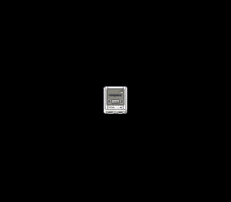

|
OpenSNES
Modern Open-Source SNES Development SDK
|
|
OpenSNES
Modern Open-Source SNES Development SDK
|
Family 4 — Input · rung 4.2
The rung that turns a demo into a game: read the D-pad every frame and move a sprite with it. This is the difference between watching and playing — the player is now in control.

This reuses the entire simple_sprite setup — tiles to VRAM, palette to CGRAM 128, OBJSEL — and adds a single new thing: the input loop. Sprite position is 9-bit X and 8-bit Y, so if you walk off an edge the coordinate wraps around. That OAM coordinate quirk is visible here for free; real games park an off-screen sprite at a hidden Y instead of letting it wrap.
Run move_sprite.sfc in luna and steer the sprite with the D-pad.
console, dma, sprite, input
← 4.1 controller · → 4.3 two_players